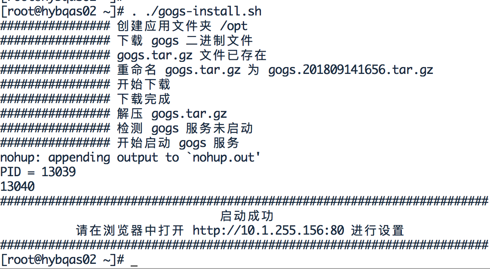
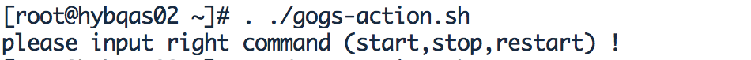

脚本在底部
GOGS 安装

GOGS 配置
1、数据库设置
修改数据库类型为: SQLite3
数据库文件路径: /home/git/gogs-data/gogs.db
2、应用基本设置
应用名称为: XXXGIT
仓库根目录: /home/git/gogs-repositories
运行系统用户: git
域名: host_ip （服务器 ip 地址/域名 如：10.1.255.156）
SSH 端口号: 22
HTTP 端口号: 3000（3000）
应用 URL: http://host_ip:3000（服务器 ip:80 地址/域名 如：http://10.1.255.156:3000）
日志路径: /home/git/gogs-log
3、选择设置
管理员帐号设置
管理员用户名: gogsadmin
管理员密码: 123456
确认密码: 同上
管理员邮箱: kellen.cai@126.com
4、立即安装
点击【立即安装】按钮即可
GOGS 启动、停止、重启脚本
shell脚本在底部

GOGS安装脚本
#!/usr/bin/env bash
set -e
# Root执行 CentOS7
sleep 1s
if ! type wget >/dev/null 2>&1; then
echo "################ wget 开始安装"
yum install -y wget
echo "################ wget 安装完成"
fi
sleep 1s
if ! type git >/dev/null 2>&1; then
echo "################ git 开始安装"
yum install -y git
echo "################ git 安装完成"
fi
sleep 1s
# 创建用户
user=git
group=git
if ! egrep "^$group" /etc/group >/dev/null 2>&1;
then
echo " 创建 git 用户组"
groupadd $group
fi
#create user if not exists
if ! egrep "^$user" /etc/passwd >/dev/null 2>&1;then
echo "################ 创建 git 用户"
useradd -g $group $user
echo "################ 创建用户完成"
fi
echo "################ 创建应用文件夹 /opt"
mkdir -p /opt
mkdir -p /home/git
sleep 1s
TIME=$(date "+%Y%m%d%H%M")
echo "################ 下载 gogs 二进制文件"
if [ ! -f "/opt/gogs.tar.gz" ];then
echo "################ gogs.tar.gz 文件不存在"
sleep 1s
echo "################ 开始下载"
wget -O /opt/gogs.tar.gz https://github.com/gogs/gogs/releases/download/v0.11.53/linux_amd64.tar.gz
echo "################ 下载完成"
else
echo "################ gogs.tar.gz 文件已存在"
echo "################ 重命名 gogs.tar.gz 为 gogs.$TIME.tar.gz"
mv /opt/gogs.tar.gz /opt/gogs.$TIME.tar.gz
sleep 1s
echo "################ 开始下载"
wget -O /opt/gogs.tar.gz https://github.com/gogs/gogs/releases/download/v0.11.53/linux_amd64.tar.gz
echo "################ 下载完成"
fi
sleep 1s
echo "################ 解压 gogs.tar.gz"
rm -rf /opt/gogs/
tar -xzf /opt/gogs.tar.gz -C /opt
mkdir -p /opt/gogs/custom/conf/
sudo chown -R git:git /opt
sudo chown -R git:git /home/git
iptables -t nat -A PREROUTING -p tcp --dport 80 -j REDIRECT --to-port 3000
# 清空nat表PREROUTING链
# iptables -t nat -F PREROUTING
sleep 1s
PID=$(ps -ef | grep gogs | grep -v grep | awk '{print $2}')
if [[ ! $PID ]]; then
echo "################ 检测 gogs 服务未启动"
else
echo "################ 检测 gogs 服务启动中 PID=${PID}"
sudo kill -9 ${PID}
echo "################ 已停止 gogs 服务"
fi
sleep 1s
echo "################ 开始启动 gogs 服务"
sudo su - git -c "cd /opt/gogs && nohup ./gogs web &"
sleep 3s
PID2=$(ps -ef | grep gogs | grep -v grep | awk '{print $2}')
HOST_IP=`ip a |grep eth0 | grep inet | grep -v inet6 | grep -v 127 | sed 's/^[ \t]*//g' | cut -d ' ' -f2 | cut -d / -f 1`
echo "PID = $PID2"
if [[ ! $PID2 ]]; then
echo -e "\033[31m gogs 服务启动失败！请尝试重新启动\033[0m"
else
echo "#######################################################################"
echo " 启动成功 "
#echo " gogs 内置端口 3000 iptable 配置 80 转发 3000 "
echo " 请在浏览器中打开 http://${HOST_IP}:80 进行设置 "
echo "#######################################################################"
fi
GOGS启动脚本
#!/usr/bin/env bash
set -e
PID=$(ps -ef | grep gogs | grep -v grep | awk '{print $2}')
MODE=$1
case "${MODE}" in
stop)
if [[ ! $PID ]]; then
echo "检测gogs服务未启动"
else
sudo kill -9 ${PID}
echo "已停止gogs服务"
fi
;;
restart)
if [[ ! $PID ]]; then
echo "检测gogs服务未启动，启动gogs服务"
else
sudo kill -9 ${PID}
echo "已停止gogs服务"
fi
sudo su - git -c "cd /opt/gogs && nohup ./gogs web &"
PID=$(ps -ef | grep gogs | grep -v grep | awk '{print $2}')
echo "gogs服务启动成功PID=${PID}"
;;
start)
if [[ ! $PID ]]; then
echo "检测gogs服务未启动，启动gogs服务"
else
sudo kill -9 ${PID}
echo "已停止gogs服务"
fi
sudo su - git -c "cd /opt/gogs && nohup ./gogs web &"
PID=$(ps -ef | grep gogs | grep -v grep | awk '{print $2}')
echo "gogs服务启动成功PID=${PID}"
;;
*)
echo $"please input right command (start,stop,restart) !"
;;
esac